Part 1: Lightweight Object Detection
Methodology
The banana detection system employs a Single Shot MultiBox Detector (SSD) architecture, a modern deep learning approach for object detection. Inspired by the implementation described in D2L's SSD tutorial, this method combines anchor-based detection with multi-scale feature maps to detect objects at various sizes in a single forward pass. The network generates anchor boxes of different aspect ratios and scales at multiple feature map resolutions, allowing it to detect bananas of varying sizes throughout the image. Each anchor box predicts both a class probability (banana vs. background) and bounding box offsets to refine the anchor location. During training, the model learns to classify anchors and regress their coordinates using a multi-task loss combining classification (cross-entropy) and bounding box localization (Huber/smooth L1) objectives. At inference time, predictions with confidence scores above a threshold are retained, and Non-Maximum Suppression (NMS) removes redundant detections based on Intersection-over-Union (IoU) overlap (threshold=0.5).
Training Curves
The following plot shows the training and validation loss curves during model training. The bounding box localization loss (Huber/smooth L1) converges steadily, indicating that the model successfully learns to predict accurate bounding box coordinates. The classification loss (cross-entropy) also shows good convergence, demonstrating effective learning of the banana vs. background distinction. Both losses plateau after short training (15 epochs).
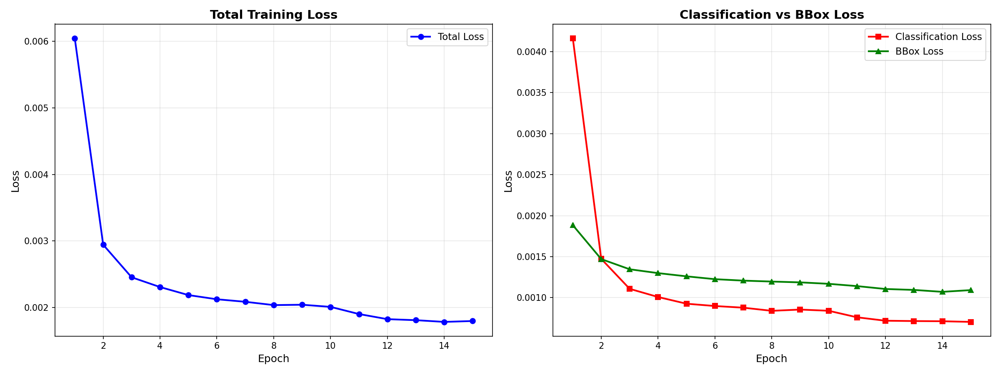
Banana Detection Examples
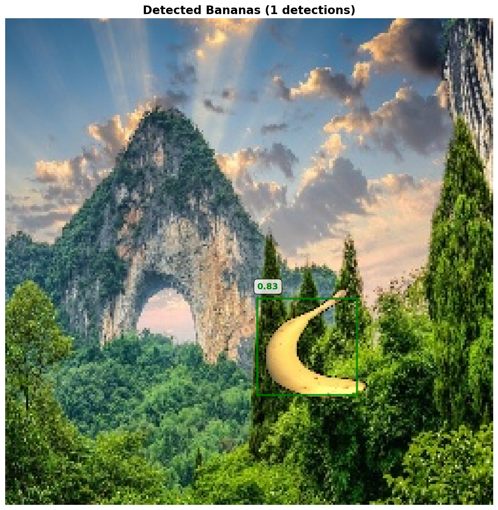
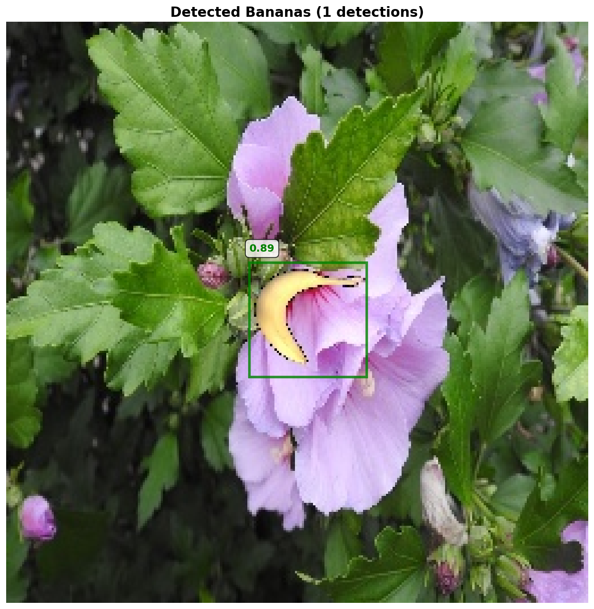
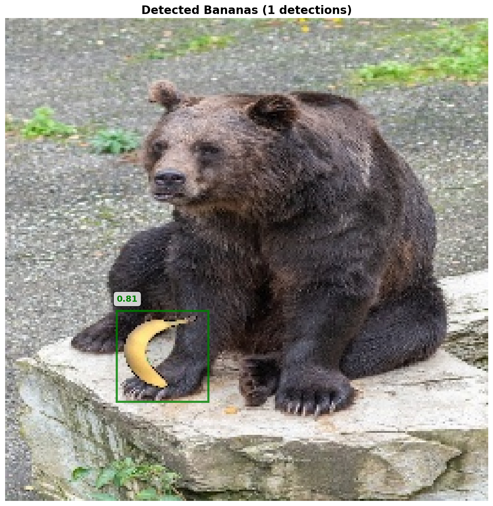
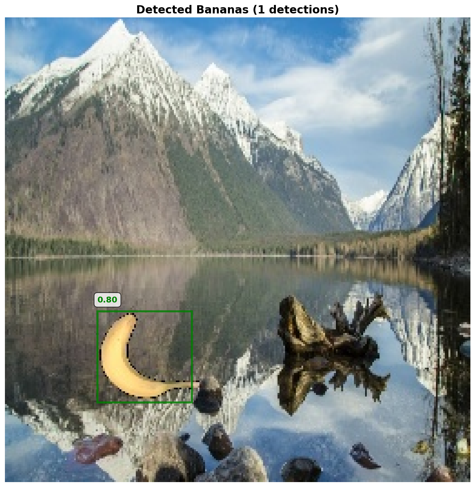
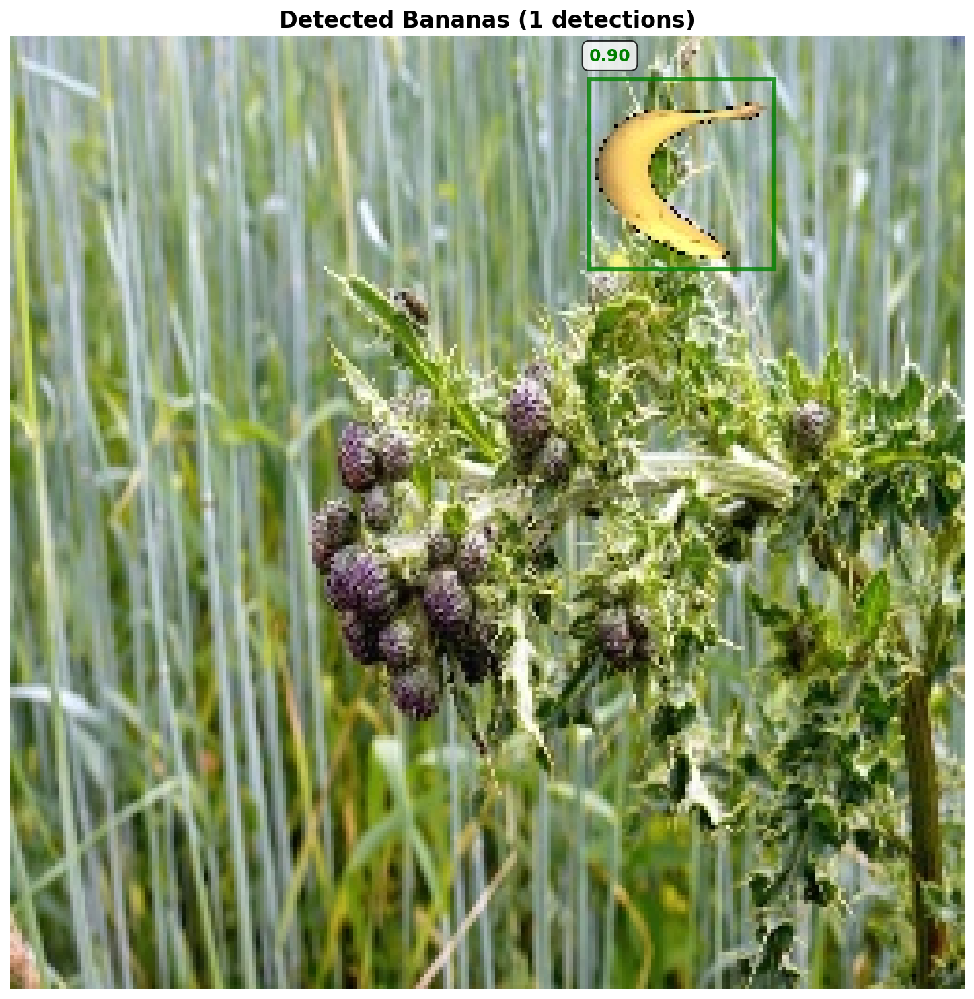
Custom Image Detection Results
The following images demonstrate the detector's performance on custom test images. The first two examples are performed on an image I constructed by taking one of my own photos and inserting a banana. The first photo was taken by me when I visited Batu Caves, in Kuala Lumpur, Malaysia. I figured that the monkeys, who usually sit their stealing food from tourists, would be interested in a banana.
The second photo is a picture of several dolphins that I took on the ferry to Channel Islands National Park, California. I added the banana because, honestly, I figured the dolphins were pretty banana-shaped.
Finally, I tested the detector on a more challenging photo, a stock photo of bananas I found on the internet. Unfortunately, the detector struggled with this image.
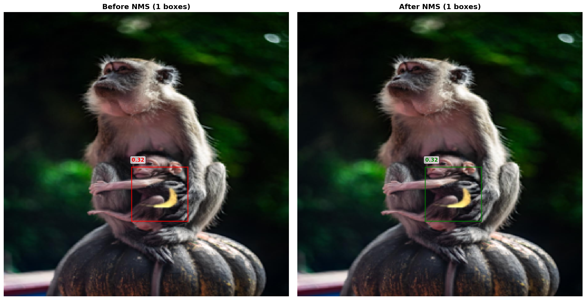
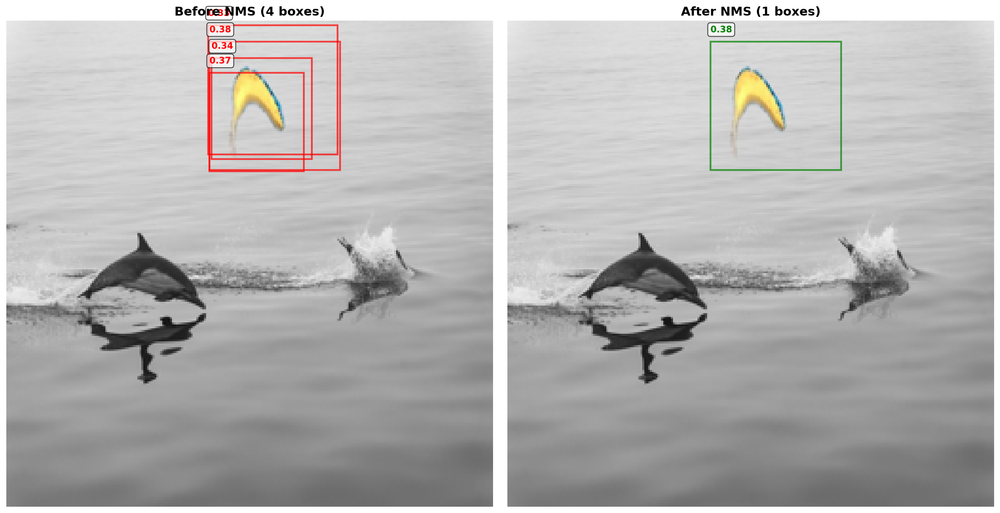
Failure Case Analysis
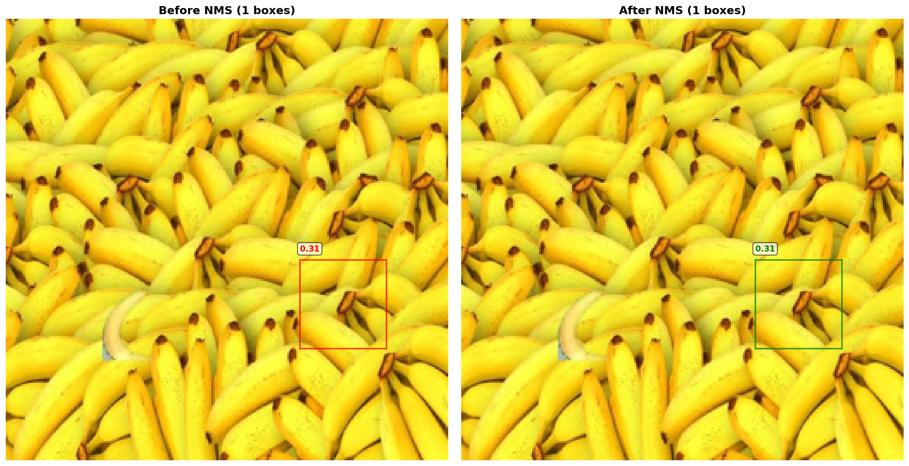
Failure Case Discussion: The detector struggled significantly with This image of multiple bananas. I initially tried to get it to detect just any of the bananas in the image, but upon failing this, I photoshopped in one of the bananas from the test set of our dataset. Unfortunately, and to my genuine surprise, this did not help. The detector still failed to identify that banana, instead homing in on a random banana stem. Unfortunately, this is likely a data/dataset issue. A truly robust banana detector would need to be trained on a much larger and more diverse dataset, consisting of bananas that exist in their natural environments, with varying lighting conditions, occlusions, and orientations. The toy dataset of superimposed bananas just does not represent a generalizable distribution of real-world banana images.
Part 2: Non-Maximum Suppression (NMS)
The Importance of Non-Maximum Suppression
Non-Maximum Suppression (NMS) is a critical post-processing step in object detection that addresses the problem of multiple overlapping detections for the same object. When using essentially any object-detection approach, from region proposal networks to selective search to traditional template matching, the detector often produces many bounding boxes with high confidence scores around each true object, as nearby windows generate similar strong responses. Without NMS, these redundant detections clutter the output and make it difficult to determine the actual number of objects present.
NMS works by iteratively selecting the detection with the highest confidence score and suppressing all other detections that overlap with it above a specified Intersection-over-Union (IoU) threshold. This process continues until all detections have either been selected or suppressed. The IoU threshold controls the aggressiveness of suppression: lower values (e.g., 0.3) suppress more boxes and work well for sparse objects, while higher values (e.g., 0.7) are more conservative and better suited for densely packed scenes where objects may legitimately overlap.
The effectiveness of NMS is crucial for obtaining clean, actionable detection results. It transforms a noisy set of overlapping bounding boxes into a concise set of high-confidence predictions, each representing a single object instance. This not only improves visualization but also enables accurate object counting and downstream processing tasks that rely on discrete object instances.
Its primary limitation is its reliance on a hand-crafted IoU threshold. This heuristic approach can incorrectly suppress accurate predictions that overlap with a higher-scoring detection, leading to missed objects in crowded scenes. Furthermore, the NMS process is not differentiable, preventing it from being optimized end-to-end within the neural network.
NMS Results
The following images demonstrate the before and after effects of applying Non-Maximum Suppression to the detection results. The first image shows raw detections with multiple overlapping bounding boxes, while subsequent images show the cleaned results after NMS is applied with an IoU threshold of 0.5.
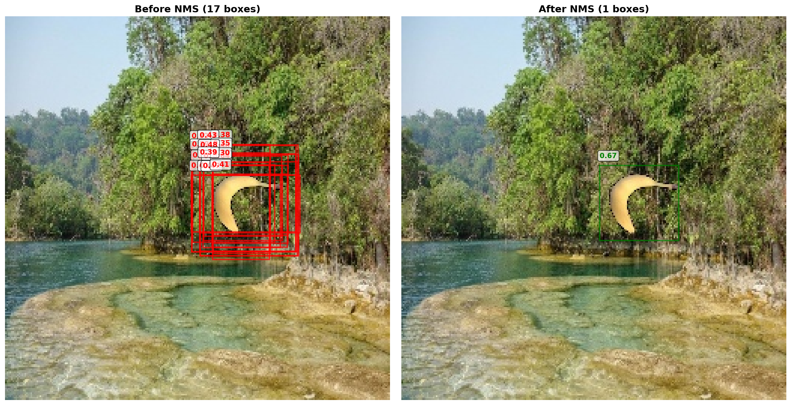
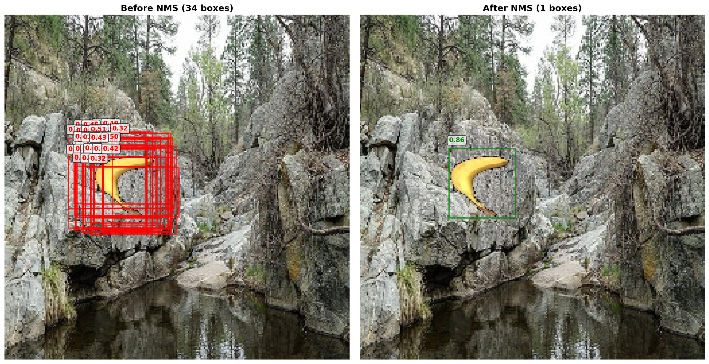
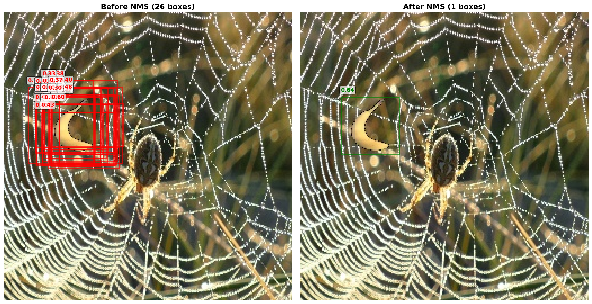
The NMS results clearly demonstrate the algorithm's effectiveness in eliminating redundant detections. By suppressing overlapping bounding boxes, we obtain a clean set of detections where each banana is represented by a single, high-confidence bounding box.
Implementation Comparison: Custom NMS vs. PyTorch
The from-scratch NMS implementation in this project
closely follows the standard algorithm but uses pure
NumPy operations, while PyTorch's
torchvision.ops.nms is GPU-accelerated and
optimized for tensor operations. The core logic is
identical: both sort boxes by score, iteratively select the
highest-scoring box, and suppress overlapping boxes above
the IoU threshold. The main differences lie in
implementation details. The custom version uses NumPy's
argsort()[::-1] for descending sort and
manually computes IoU with array broadcasting, while
PyTorch's version operates directly on CUDA tensors for
parallel computation. Both use the same greedy selection
strategy, but PyTorch's implementation is significantly
faster for large numbers of detections due to optimized
C++/CUDA backends. For this project's scale (typically
fewer than 100 candidate boxes per image), the performance
difference is negligible, but the custom implementation
provides transparency into the algorithm's mechanics.
Part 3: Human–Object Interaction (HOI) Analysis using VLMs
Understanding Zero-Shot HOI Detection
Zero-shot Human-Object Interaction (HOI) detection aims to identify relationships between humans and objects in images without requiring extensive training data for every possible interaction. Unlike traditional object detection which simply identifies "person" and "object", HOI detection seeks to understand the <verb noun> pairs that describe what action is being performed with which object.
For this task, I utilized Qwen2-VL-2B, a compact 2-billion parameter vision-language model developed by Alibaba. This model combines visual understanding with language generation capabilities, allowing it to analyze images and produce structured text outputs describing human-object interactions. The model processes the input image through its vision encoder and generates natural language descriptions based on the prompt instructions.
Prompt Engineering
The model was given the following structured prompt to ensure consistent output formatting:
Identify the human-object interaction. Output ONLY in this exact format: <verb noun> Object is what a person is interacting with, and the verb is the action. Example: <hold phone>, <ride bicycle>, or <walk street>. Your answer:
This prompt instructs the model to identify both the action (verb) and the object (noun) in a specific format. However, as we'll see in the results, the model doesn't always perfectly follow the formatting instructions, occasionally omitting the angle brackets or adding extra descriptive words beyond the simple verb-noun structure.
Success Cases
The following examples demonstrate successful zero-shot HOI detection where Qwen2-VL-2B correctly identifies the human-object pairs and their associated actions. These cases showcase the model's ability to recognize clear, unambiguous interactions.
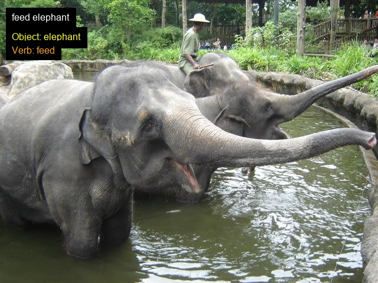
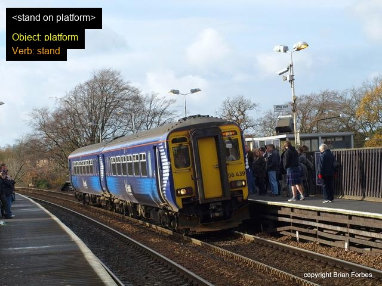
Success Analysis: In these cases, Qwen2-VL-2B successfully identified the correct verb-object pairs. The model performs best when the interaction is visually salient, the human and object are both clearly visible without significant occlusion, and the action being performed is a common, everyday activity that likely appeared frequently in the model's training data. The success cases demonstrate the model's capability to understand spatial relationships and recognize interaction patterns.
Ambiguous Cases
These examples represent cases where the model's predictions are technically plausible but may not capture the complete context or may be overly specific when a more general description would be more appropriate.
Ambiguous Case Analysis: The first ambiguous case involves a wine bottle that obscures the people in the image, making it unclear whether the identified interaction is actually what's occurring or if the model is inferring based on limited visual evidence. In the second ambiguous case, the model identified a specific action ("receiving") when a more general term like "holding" would have been more accurate and less assumptive about the intent or direction of the interaction. These cases highlight how the model sometimes over-interprets contextual clues or makes assumptions beyond what can be confidently determined from the visual information alone.
Failure Cases
The following examples illustrate clear failures where Qwen2-VL-2B incorrectly identifies either the object, the action, or fails to provide properly formatted output. Note how some of the previous results also struggled with the output formatting, but was robust enough for parsing. These failure cases represent more significant breakdowns in the model's understanding.
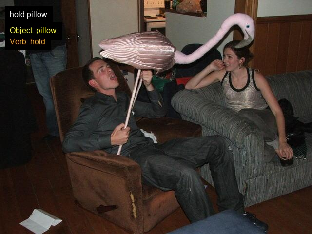
Failure Analysis: The first failure case demonstrates
an object misidentification error: the model incorrectly labeled the object
as a "pillow" when it is actually, I think, a lawn flamingo.
This reveals limitations in the model's object recognition capabilities,
particularly for unusual or less common objects. The second failure case
shows an incomplete output where the model only provided the verb without
identifying the object, failing to follow the required <verb noun> format.
This represents both a formatting failure and a detection failure, as the model
couldn't complete the fundamental task of identifying what object the person
is interacting with, the street/sidewalk.
Format Compliance Issues
Beyond the semantic understanding challenges, Qwen2-VL-2B exhibited
inconsistent adherence to the specified output format. Despite clear
instructions to output in the <verb noun> format, the
model sometimes omitted the carrots entirely, producing outputs like
"hold phone" instead of "<hold phone>". In other cases, it added
descriptive modifiers beyond the simple verb-noun structure, such as
"hold red phone" or "ride fast bicycle", deviating from the concise
format requested. This inconsistency in format compliance suggests that
smaller vision-language models like the 2B parameter Qwen2-VL may struggle
with precise instruction following, particularly when the formatting
requirements conflict with the model's natural language generation tendencies.
Reflections on Zero-Shot HOI with Qwen2-VL-2B
The results demonstrate both the promise and limitations of using compact vision-language models for zero-shot HOI detection. Qwen2-VL-2B shows impressive capabilities in recognizing common, clearly visible interactions, but struggles with ambiguous scenes, unusual objects, and strict format adherence. The model's 2-billion parameter size makes it efficient and deployable on resource-constrained devices (I ran it locally on my RTX 4060 Laptop GPU), but this compactness comes at the cost of reduced accuracy compared to larger models like GPT-5 or Gemini. The ambiguous and failure cases reveal that the model relies heavily on visual similarity to common training examples. When objects deviate from canonical appearances (like the flamingo being misidentified as a pillow) or when contextual reasoning is required (like distinguishing "giving" vs. "receiving" vs. "holding"), the model's limitations become apparent. Future improvements could involve fine-tuning on HOI-specific datasets, using larger model variants, or implementing multi-step reasoning approaches where the model first identifies objects and actions separately before combining them into interaction descriptions.
Improved Prompt Engineering
To address the failures and ambiguities observed with the initial prompt, I developed a more detailed prompt with explicit rules and clear examples. The goal was to improve both semantic accuracy and format compliance.
Revised Prompt
The improved prompt provides more explicit constraints and examples:
Identify the primary human-object interaction. The "noun" is the object the person is directly interacting with. The "verb" is the specific physical action the person performs on it. **Rules:** - Must be a single, physical action. - The human must be physically touching or using the object. - Use the most precise verb (e.g., "press button" not "use phone"). - Only output the final answer in the exact format: <verb noun> **Examples:** - A person looking at their phone to send a text -> <type message> - A person sitting on a bench in the park -> <sit bench> - A person using a hammer to hit a nail -> <hammer nail> Now, identify the interaction for this image. Output ONLY: <verb noun>
Improvements Over the Original Prompt: The revised prompt adds several critical constraints. First, it explicitly defines what constitutes a valid interaction by requiring "physical action" and "physically touching or using the object," which helps disambiguate cases like the flower scenario where the model previously struggled between "receiving," "giving," and "holding". This assumption, of course, comes at the cost of some potential interactions such as "staring" or "want". Second, it emphasizes precision by instructing the model to use the "most precise verb," potentially helping with object misidentification by forcing more specific descriptions. Third, it provides more detailed examples that demonstrate the reasoning process before showing the final output format, giving the model clearer templates to follow. Finally, it adds a direct instruction at the end ("Output ONLY: <verb noun>") to reinforce format compliance.
Results with Improved Prompt
The following images show how the revised prompt performed on challenging cases, including images that previously resulted in failures.
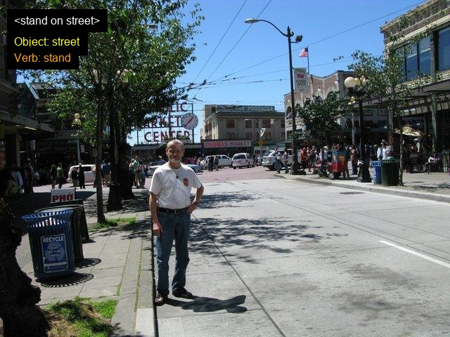
Improved Results Analysis: The revised prompt showed measurable improvements on the previously failed cases. For the flamingo image, the model's performance improved, this time identifying the flamingo as, at least, a bird. Of course, bird isn't the most specific descriptor of what the man is holding, and it doesn't specify whether or not the bird is real or fake, but, it is decidedly better than calling it a pillow. The second fixed case also benefited, as the model accurately identified the object as "street" rather than giving no output at all.
New Failure: Formatting
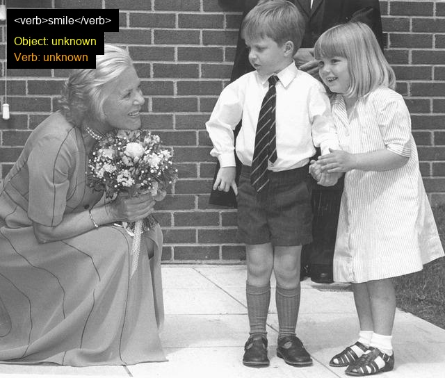
Format Compliance Regression: Interestingly, while the revised prompt improved performance on difficult object recognition cases, it introduced a new failure mode for an image that the original prompt handled correctly. The model failed to adhere to the required <verb noun> format for this particular image, despite the improved prompt's stronger emphasis on format compliance. I suspect that this regression may be due to the increased complexity of the prompt, which could have introduced too much of a load on the smaller 2-billion parameter model. This is the only example I have shown here, but in my experiments, I found that the smaller prompt often gave incorrect formats that were "close" more often, whereas this prompt failed more rarely but more spectacularly. You may have noticed that both of my success cases with the original prompt actually didn't perfectly follow the format, but they were accurate descriptions of the human-object interaction nonetheless. This trade-off between semantic accuracy and format compliance is an interesting area for further exploration.